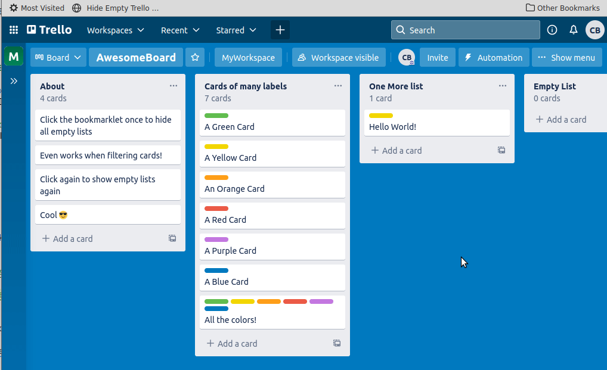

Hide Empty Trello Lists Bookmarklet
A bookmarklet that toggles hiding and showing empty lists on Trello boards, bringing this functionality from the Android Trello app to your desktop/laptop web browser.

Usage
Follow the instructions below to add the bookmarklet to your browser.
With the browser open to a Trello board, click the bookmark to toggle between enabling and disabling the bookmarklet. When enabled, any Trello lists with no cards currently displayed will be hidden.
Notes
- Only works on currently open browser tab when open to Trello. Refreshing tab, closing tab, or navigating to another site will reset to the default Trello behavior.
- When enabled, the bookmarklet hides empty lists even when not filtering/searching cards. The Trello Android app only hides empty lists when filtering.
Compatibility
Tested in Firefox and Chrome desktop browsers. May work on other browsers as well.
Install
Drag and drop the following button to your browser's Bookmarks Bar:
Hide Empty Trello Lists
Alternate install method
- Right click on button above and copy link
- Create a new bookmark in your browser using the copied link as the URL
Source Code
The source code for the bookmarklet can be found here.